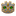
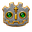
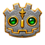
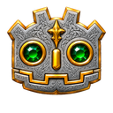
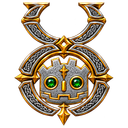

GODOTUO / BRAND ASSETS / V1
Emerald eyes. Gold details.
The selected silver-and-gold emblem, finished with a gold nose, and its standalone custom Godot mark.
Small-size reference

16 px
32 px
64 px
128 px
128 px emblemFiles and usage
PNG 16–1024 px; WebP 256–1024 px; ICO and ICNS; favicon and touch icons; Open Graph, Full HD, and 4K layouts. Read the guide for project copy, credits, and integration notes.
Native masters are 1254 × 1254 pixels, transparent and on black. Every logo export is transparent; the Open Graph cards and the Apple touch icon stay on black. Larger exports are upscaled. These are raster artworks; vector versions are not included.